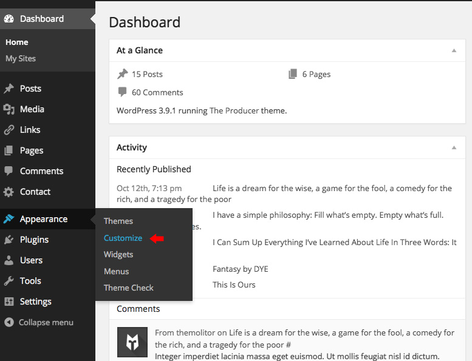
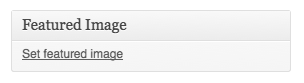
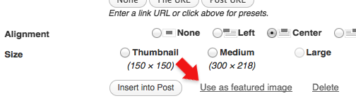
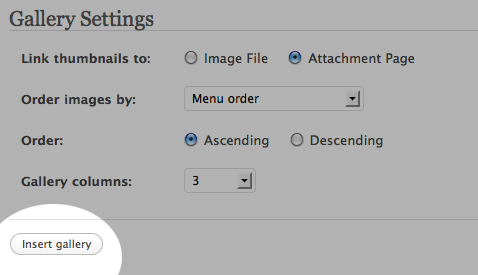
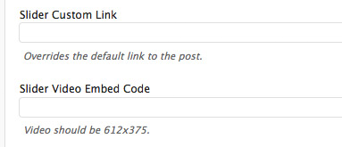
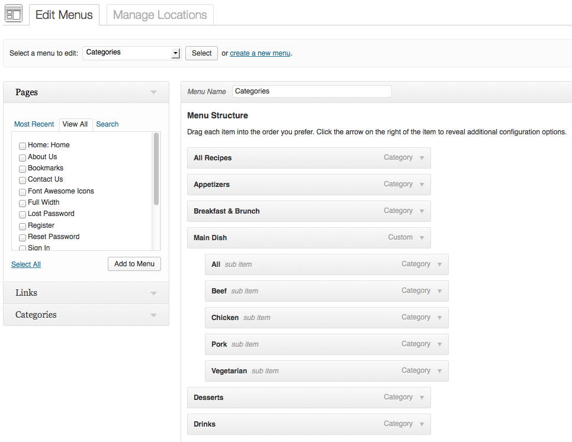
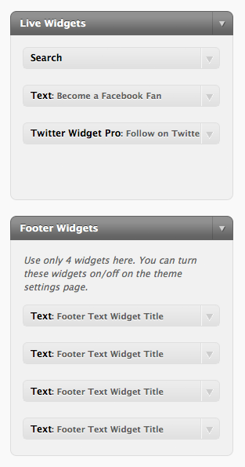
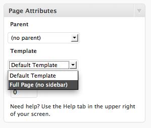
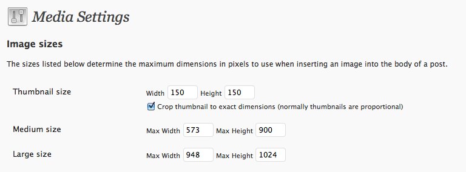
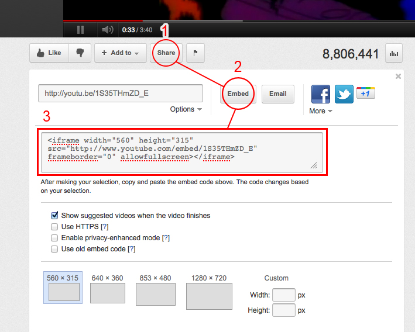

Support Resources
- Online Help File: http://www.themolitor.com/help/wppolitico/
- Video walk-throughs: http://www.youtube.com/user/themolitor/videos
- Support Forums: http://www.themolitor.com/forums/
- Customization Requests: http://themolitor.com/custom
- Theme Demo: http://premium.themolitor.com/?theme=politico
Plugins
- WP-PageNavi: http://tinyurl.com/59kwmq
- Contact Form 7: http://tinyurl.com/2hjj5x
- Twitter Widget Pro: http://tinyurl.com/ygzhxu2
- WP Super Cache: http://tinyurl.com/375zv9
- Regenerate Thumbnails: http://tinyurl.com/7sfaxc
- Display Widgets: http://tinyurl.com/y9wj8gs
- Facebook Like Box: http://tinyurl.com/5u5xm64
Installation
- Download and unzip the folder from ThemeForest.
- Upload the theme folder (with the "style.css" file inside) to the themes directory of your blog, which is located within the wp-content directory.
- Activate the theme from your admin panel by navigating to "appearance" > "themes".
- NOTE: If you get a message like “stylesheet missing” (it isn’t) or “broken theme” (it’s not), please read this post: http://tinyurl.com/9x7mpvr
- Options will be accessible from “appearance” > “customize”.
Theme Options
Theme options are controlled from the theme customizer panel. Once finished installing the theme, be sure to review the options available by navigating to “Appearance” > “Customize”.
Featured Images
To add post thumbnails and slider images, use the “Featured Image” section of the post edit page (see screenshot below). Images for blog posts are 225x225. Images for the dual slider are 612x375. Images for the nivo slider are 918x375.

Gallery Images
To create a gallery layout, simply create a page and upload images. Once you've uploaded images, use the "insert gallery" option that is built into WordPress (see image below).
Custom Post Options
Below each post and page edit box is a section called “Custom Post Options”. This is where you will find theme-specific features for the post or page you're editing.
Menu Setup
To organize your menu tabs, navigate to “Appearance” > “Menus”. For more information and instruction, watch the theme setup video here: http://www.youtube.com/user/themolitor/videos.
NOTE: Sub menus are not supported for the header menu.

Widgets
The widgets section is controlled from the "widgets" page (under "appearance"). The “Live Widgets” section controls the sidebar widgets and "Footer Widgets" control the bottom widgets.
Full Page Layout
To create a full-page layout, select “Full Page (no sidebar)” in the template drop down inside page attributes (see screenshot below)
Media Settings
It’s a good idea to set the size of images to use within your post/page content. Navigate to “Settings” > “Media” and make your images the same sizes as indicated in the below screenshot…
Comments
- Turn off comments site-wide:
- Navigate to "settings" > "discussion" and uncheck the allow comments box... http://tinyurl.com/4yqmndt
- Turn off comments for a specific post/page:
- Uncheck the box in the discussion panel... http://tinyurl.com/3sag9qq
- If you don't see this, you can turn it on by clicking "screen options" and checking the box to display discussion options... http://tinyurl.com/4ytetds
Image Lightbox
This theme uses PrettyPhoto as a lightbox system for images. You can make images show up with the light box by adding rel=”prettyPhoto” to the links. For more info, check out the PrettyPhoto website: http://www.no-margin-for-errors.com/projects/prettyphoto-jquery-lightbox-clone/
Pagination
OPTIONAL: To achieve the same pagination as the demo, you’ll want to install and activate the “WP-PageNavi” plugin. No setup required, just activate the plugin. You can download it here: http://tinyurl.com/59kwmq
Tool Tips
To apply tool tips to links, make sure you give them a class name of "tooltip" and an appropriate title attribute. The styling of the tooltip is achieved in the CSS file under the "TOOL TIP STYLE" section, with the class name of ".itooltip".
Embedding YouTube Videos
You can embed YouTube videos by pasting the embed code provided by YouTube (see screenshot) into the post content box. When you're dealing with raw code, make sure you're using the "HTML" tab (not the "visual") tab on the WordPress page/post edit screen.
JavaScript
This theme imports the following JavaScript files:
- jQuery: jQuery is a JavaScript library that greatly reduces the amount of code that you must write.
- Custom Scripts: The scripts.js file provides some custom scripts for jQuery.
- Countdown: This file is what operates the countdown feature.
- IE7: JavaScript library to make Microsoft Internet Explorer behave like a standards-compliant browser. It fixes many HTML and CSS issues and makes transparent PNG work correctly under IE5 and IE6. For more info, svisit http://code.google.com/p/ie7-js/
PSD Files
The 2 main PSD files, “politico.psd” and “politico-page.psd” utilizes folders for organizing content. If you’re trying to edit a specific section, just locate the proper folder to find the layer.
Changelog
v2.0.5 - Apr 2015 * Added support for WordPress 4.2 sidebar requirements * Code improvements and optimizations v2.0.4 - Mar 2015 * Code improvements and optimizations v2.0.3 - Apr 2014 * Code improvements and optimizations v2.0.2 - Feb 2014 * Code improvements and optimizations v2.0.1 - Jan 2014 * Minor bug fix v2.0.0 - Jan 2014 * Added: Responsive theme layout. * Added: Clicking videos in slider pauses slider. * Added: Font Awesome icon support. * Added: retina support. * Improved: Slider perfomance. * Improved: Site loading times and performance. v1.4.1 - Sept 2013 * Added: Styling support for the email field. * Added: Custom CSS option in theme customizer. * Fixed: Typo in theme customizer for the "Facebook URL" field. v1.4.0 - Sept 2013 * Added: WP theme customizer support (replaces OptionTree theme options panel). * Improved: general code improvements. v1.3.0 - Feb 2013 * Added: localization support. v1.2.2 - Feb 2013 * Updated: theme options panel. v1.2.1 - Nov 2012 * Updated: theme options panel appearance and updated/added support tab. v1.2.0 - Aug 2012 * Added: Built-in theme options. Plugin no longer required. * Improved: Code optimized/updated. v1.1.0 * Fixed: 2nd level drop down menu bug in IE. * Added: OptionTree settings are now built into the theme.